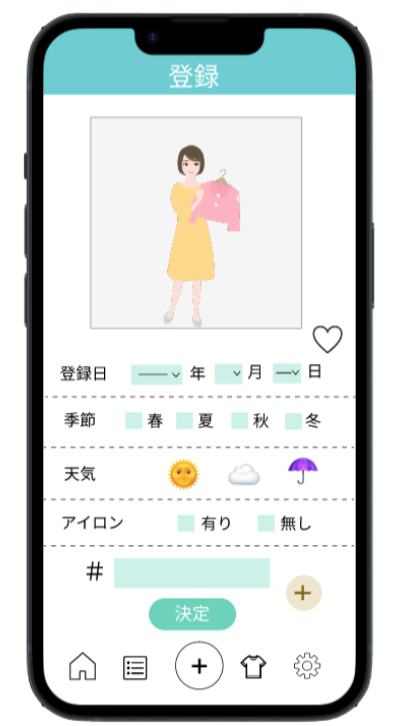
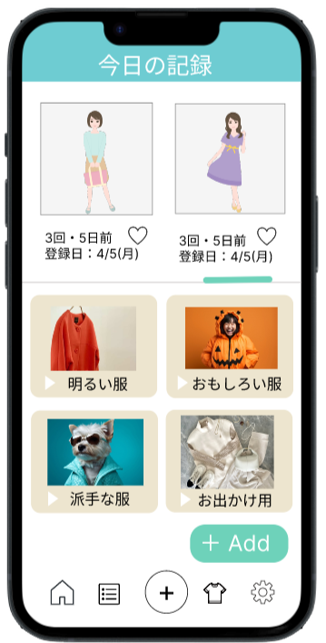
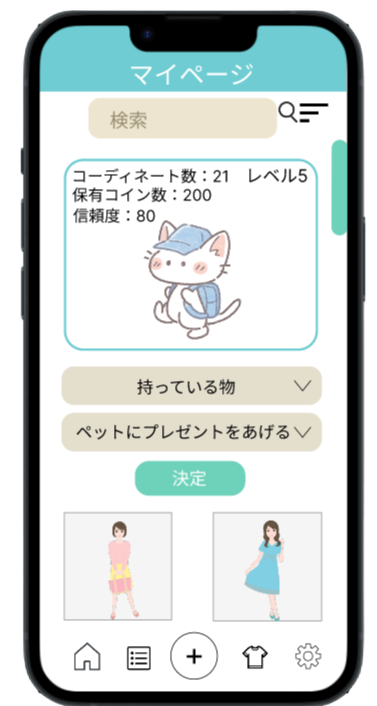
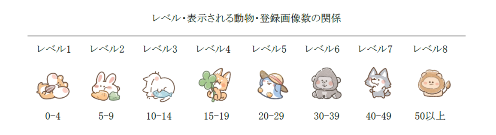
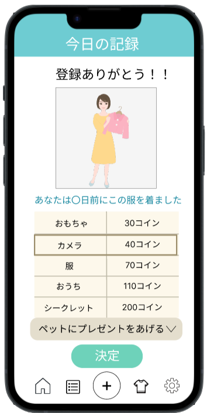

StyleSnapとは
StyleSnapはユーザーが登録したコーディネート画像の中からその日の天気や気温に合わせたコーディネートを提案するアプリです。アプリを開くとその日に着ていく服が決まるため意思決定の時間が短縮されてより有意義な生活が送れるようになると考えられます。
StyleSnapの特徴
- その日の天気や気温に合わせたコーディネートの提案
- 季節や天気、アイロンやお気に入り登録の有無による絞り込み検索や「#」を用いたキーワード検索
- 登録日時や着用日時、着用回数による並び替え表示
- 自分でリスト名をつけてコーディネートをまとめるリスト機能
- 着用回数や前回着てからの経過日数、購入日時の表示
各画面の紹介

服の登録
このアプリを使用するためには初めにコーディネートの登録が必要になります。
この画面で登録日時や季節、天気、アイロンやお気に入りの有無を登録すると季節や天気を使った絞り込み検索や登録日時による並べ替え、「#」を使ったキーワード検索ができるようになります。
ホーム画面
ホーム画面にはその日の気温や天気に合わせたコーディネートが表示されます。左上の今日の記録ボタンを押すと、その日に着ていく服を記録できて後から着用回数や経過日数を確認できるようになります。

履歴とリスト
上側は履歴、下側はリストが表示されていて、上側の履歴は左右にスワイプすると閲覧できます。下側のリストは明るい服、派手な服、お出かけ用等、自分で作成したリストにコーディネートを追加してまとめることが可能です。

マイページ
マイページでは自分が登録したコーディネート一覧を閲覧できます。さらに、季節、天気、アイロンやお気に入り登録の有無を使った絞り込み検索、「#」を使ったキーワード検索なども可能です。
さらに、登録日時の新しい順・古い順、着用日時の近い順・遠い順、着用回数の降順・昇順で並び替えることもできます。
このアプリの魅力
コーディネート登録によるレベルの向上とペットの種類の変化
コーディネートの画像を登録するごとにレベルが上がり、表示される動物の種類も変化します。さらに、今日のコーディネートを記載すると毎回5枚のコインが貰えて貯まったコインを使ってペットにプレゼントを渡すこともできます。
ちなみにプレゼントには帽子、本、服等があり、ペットにプレゼントを渡したり、新しいコーディネートや今日の記録を登録したりすることでペットの信頼度を高められるようにしています。


服の登録
このアプリを使用するためには初めにコーディネートの登録が必要になります。
この画面で登録日時や季節、天気、アイロンやお気に入りの有無を登録すると季節や天気を使った絞り込み検索や登録日時による並べ替え、「#」を使ったキーワード検索ができるようになります。
ホーム画面
ホーム画面にはその日の気温や天気に合わせたコーディネートが表示されます。左上の今日の記録ボタンを押すと、その日に着ていく服を記録できて後から着用回数や経過日数を確認できるようになります。
履歴とリスト
上側は履歴、下側はリストが表示されていて、上側の履歴は左右にスワイプすると閲覧できます。下側のリストは明るい服、派手な服、お出かけ用等、自分で作成したリストにコーディネートを追加してまとめることが可能です。
マイページ
マイページでは自分が登録したコーディネート一覧を閲覧できます。さらに、季節、天気、アイロンやお気に入り登録の有無を使った絞り込み検索、「#」を使ったキーワード検索なども可能です。 さらに、登録日時の新しい順・古い順、着用日時の近い順・遠い順、着用回数の降順・昇順で並び替えることもできます。
コーディネート登録によるレベルの向上とペットの種類の変化
コーディネートの画像を登録するごとにレベルが上がり、表示される動物の種類も変化します。さらに、今日のコーディネートを記載すると毎回5枚のコインが貰えて貯まったコインを使ってペットにプレゼントを渡すこともできます。
ちなみにプレゼントには帽子、本、服等があり、ペットにプレゼントを渡したり、新しいコーディネートや今日の記録を登録したりすることでペットの信頼度を高められるようにしています。